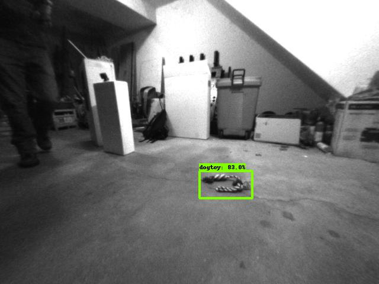
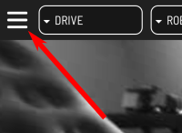
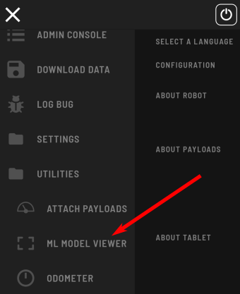

<< Previous Page | Next Page >>
Fetch Part 3: Evaluating the Model
In this portion of the tutorial, you will:
- Evaluate your model on test data.
- Connect your model to Spot.
- Use Spot's tablet to view your model in real time.
Convert a Checkpoint into an Online Model
First, we need to convert our training output into a model we can use online.
- Copy the conversion script to a convenient location:
cp models-with-protos/research/object_detection/exporter_main_v2.py .mkdir -p dogtoy/exported-models/dogtoy-modelpython3 exporter_main_v2.py --input_type image_tensor --pipeline_config_path dogtoy/models/my_ssd_resnet50_v1_fpn/pipeline.config --trained_checkpoint_dir dogtoy/models/my_ssd_resnet50_v1_fpn/ --output_directory dogtoy/exported-models/dogtoy-modelEvaluate the Model
Now we'll run our model on some images and make sure the results are acceptable.
- Download the eval.py script and save it in
~/fetch - Make a directory for the output images
mkdir -p dogtoy/outputpython3 eval.py -i dogtoy/images -m dogtoy/exported-models/dogtoy-model/saved_model -l dogtoy/annotations/label_map.pbtxt -o dogtoy/outputIf everything went well, you'll have a bunch of images with bounding boxes around the dog-toys!
Troubleshooting
If a lot of bounding boxes are incorrect or missing, you'll need to troubleshoot.
Is the model failing on images in the training set?
If so, something went wrong during training, as the model isn't working on the data it already saw during training. This usually means there is a structural problem with your training.
- Double check that you made all changes to
pipeline.configfrom our checklist. - Train for longer.
Good performance on training set; poor performance in test set
- Do you have at least 300 labeled images?
- Did you move the toy to get multiple views during data capture?
- Do your images cover a wide variety of viewpoints?
- Do you have images both close to and far from the dog-toy?
Connecting to Spot
Next, we'll connect to Spot using the [Network Compute Bridge](../../concepts/network_compute_bridge.md) which will let us view the results on the tablet and use our model in a script.
To do this, we'll write a script that connects to Spot and offers our model as a network compute resource.
Network Compute Server Overview
We will write a small server that will take images, run our model, and return bounding box coordinates.

Create (or download) network_compute_server.py into your ~/fetch folder. We'll walk through each part:
import argparse
import io
import os
import sys
import time
import logging
import cv2
from PIL import Image
import numpy as np
from bosdyn.api import network_compute_bridge_service_pb2_grpc
from bosdyn.api import network_compute_bridge_pb2
from bosdyn.api import image_pb2
from bosdyn.api import header_pb2
import bosdyn.client
import bosdyn.client.util
import grpc
from concurrent import futures
import tensorflow as tf
import queue
import threading
from google.protobuf import wrappers_pb2
from object_detection.utils import label_map_util
kServiceAuthority = "fetch-tutorial-worker.spot.robot"
Import a bunch of packages and define a constant.
class TensorFlowObjectDetectionModel:
def __init__(self, model_path, label_path):
self.detect_fn = tf.saved_model.load(model_path)
self.category_index = label_map_util.create_category_index_from_labelmap(label_path, use_display_name=True)
self.name = os.path.basename(os.path.dirname(model_path))
def predict(self, image):
input_tensor = tf.convert_to_tensor(image)
input_tensor = input_tensor[tf.newaxis, ...]
detections = self.detect_fn(input_tensor)
return detections
This class loads our model and has a function to run the model on an image. We'll call that function below.
def process_thread(args, request_queue, response_queue):
# Load the model(s)
models = {}
for model in args.model:
this_model = TensorFlowObjectDetectionModel(model[0], model[1])
models[this_model.name] = this_model
print('')
print('Service ' + args.name + ' running on port: ' + str(args.port))
print('Loaded models:')
for model_name in models:
print(' ' + model_name)
This is the main function for our script.
- We'll support multiple models (we'll need that later).
- Because our computation could take a long time, we don't want to do the computation in the GRPC callback. Instead we'll use a thread.
while True:
request = request_queue.get()
- Set up a
whileloop that keeps the thread alive forever. - Unpack the GRPC request that comes in via the python queue.
- Note: this call is blocking, so we'll wait here forever until we get a request
(that's how we avoid thewhile Truefrom using 100% CPU)
if isinstance(request, network_compute_bridge_pb2.ListAvailableModelsRequest):
out_proto = network_compute_bridge_pb2.ListAvailableModelsResponse()
for model_name in models:
out_proto.models.data.append(network_compute_bridge_pb2.ModelData(model_name=model_name))
response_queue.put(out_proto)
continue
else:
out_proto = network_compute_bridge_pb2.NetworkComputeResponse()
The GRPC protocol can ask our server about the models it supports. Here we check to see if we got a ListAvailableModelsRequest, and if so, we reply with our model and then continue to wait for the next request.
# Find the model
if request.input_data.model_name not in models:
err_str = 'Cannot find model "' + request.input_data.model_name + '" in loaded models.'
print(err_str)
# Set the error in the header.
out_proto.header.error.code = header_pb2.CommonError.CODE_INVALID_REQUEST
out_proto.header.error.message = err_str
response_queue.put(out_proto)
continue
model = models[request.input_data.model_name]
The input request includes a model name. Find that model or report an error.
# Unpack the incoming image.
if request.input_data.image.format == image_pb2.Image.FORMAT_RAW:
pil_image = Image.open(io.BytesIO(request.input_data.image.data))
if request.input_data.image.pixel_format == image_pb2.Image.PIXEL_FORMAT_GREYSCALE_U8:
# If the input image is grayscale, convert it to RGB.
image = cv2.cvtColor(pil_image, cv2.COLOR_GRAY2RGB)
elif request.input_data.image.pixel_format == image_pb2.Image.PIXEL_FORMAT_RGB_U8:
# Already an RGB image.
image = pil_image
else:
print('Error: image input in unsupported pixel format: ', request.input_data.image.pixel_format)
response_queue.put(out_proto)
continue
elif request.input_data.image.format == image_pb2.Image.FORMAT_JPEG:
dtype = np.uint8
jpg = np.frombuffer(request.input_data.image.data, dtype=dtype)
image = cv2.imdecode(jpg, -1)
if len(image.shape) < 3:
# If the input image is grayscale, convert it to RGB.
image = cv2.cvtColor(image, cv2.COLOR_GRAY2RGB)
image_width = image.shape[0]
image_height = image.shape[1]
Images can be in a number of formats. Here we unpack:
RAWimages in eitherGRAYSCALEorRGBJPEGimages- Either way, we always convert to RGB since that's what our model uses
We want to support all of these image types because images could be from the robot directly or from a user uploading their own image.
detections = model.predict(image)
The main call! This runs our ML model using our function above.
num_objects = 0
# All outputs are batches of tensors.
# Convert to numpy arrays, and take index [0] to remove the batch dimension.
# We're only interested in the first num_detections.
num_detections = int(detections.pop('num_detections'))
detections = {key: value[0, :num_detections].numpy()
for key, value in detections.items()}
boxes = detections['detection_boxes']
classes = detections['detection_classes']
scores = detections['detection_scores']
The output format is a little wonky, so we unpack it into something more reasonable.
for i in range(boxes.shape[0]):
if scores[i] < request.input_data.min_confidence:
continue
box = tuple(boxes[i].tolist())
# Boxes come in with normalized coordinates. Convert to pixel values.
box = [box[0] * image_width, box[1] * image_height, box[2] * image_width, box[3] * image_height]
score = scores[i]
if classes[i] in model.category_index.keys():
label = model.category_index[classes[i]]['name']
else:
label = 'N/A'
num_objects += 1
print('Found object with label: "' + label + '" and score: ' + str(score))
Loop through each object and...
- check if the score is high enough.
- convert from normalized (percentage-across/down-the-image) into pixel coordinates.
- unpack the class label.
point1 = np.array([box[1], box[0]])
point2 = np.array([box[3], box[0]])
point3 = np.array([box[3], box[2]])
point4 = np.array([box[1], box[2]])
# Add data to the output proto.
out_obj = out_proto.object_in_image.add()
out_obj.name = "obj" + str(num_objects) + "_label_" + label
vertex1 = out_obj.image_properties.coordinates.vertexes.add()
vertex1.x = point1[0]
vertex1.y = point1[1]
vertex2 = out_obj.image_properties.coordinates.vertexes.add()
vertex2.x = point2[0]
vertex2.y = point2[1]
vertex3 = out_obj.image_properties.coordinates.vertexes.add()
vertex3.x = point3[0]
vertex3.y = point3[1]
vertex4 = out_obj.image_properties.coordinates.vertexes.add()
vertex4.x = point4[0]
vertex4.y = point4[1]
Now that we have the result we'll pack it into the output proto format:
- Bounding box coordinates
- Object label
# Pack the confidence value.
confidence = wrappers_pb2.FloatValue(value=score)
out_obj.additional_properties.Pack(confidence)
The confidence value is packed to an Any field. You could pack lots of other things in here for your application.
if not args.no_debug:
polygon = np.array([point1, point2, point3, point4], np.int32)
polygon = polygon.reshape((-1, 1, 2))
cv2.polylines(image, [polygon], True, (0, 255, 0), 2)
caption = "{}: {:.3f}".format(label, score)
left_x = min(point1[0], min(point2[0], min(point3[0], point4[0])))
top_y = min(point1[1], min(point2[1], min(point3[1], point4[1])))
cv2.putText(image, caption, (int(left_x), int(top_y)), cv2.FONT_HERSHEY_SIMPLEX, 0.5,
(0, 255, 0), 2)
For debugging, we draw the bounding box on the image along with labeling text.
print('Found ' + str(num_objects) + ' object(s)')
if not args.no_debug:
debug_image_filename = 'network_compute_server_output.jpg'
cv2.imwrite(debug_image_filename, image)
print('Wrote debug image output to: "' + debug_image_filename + '"')
After our loop, we print out the number of objects and write our debug image.
response_queue.put(out_proto)
Lastly, we send the output proto back to the GRPC servicer using another python queue. After this, we're ready for the next request.
class NetworkComputeBridgeWorkerServicer(
network_compute_bridge_service_pb2_grpc.NetworkComputeBridgeWorkerServicer):
def __init__(self, thread_input_queue, thread_output_queue):
super(NetworkComputeBridgeWorkerServicer, self).__init__()
self.thread_input_queue = thread_input_queue
self.thread_output_queue = thread_output_queue
def NetworkCompute(self, request, context):
print('Got NetworkCompute request')
self.thread_input_queue.put(request)
out_proto = self.thread_output_queue.get()
return out_proto
def ListAvailableModels(self, request, context):
print('Got ListAvailableModels request')
self.thread_input_queue.put(request)
out_proto = self.thread_output_queue.get()
return out_proto
This is the GRPC servicer. It's mostly boilerplate code that connects the GRPC network request to our python queues, and writes our thread's responses back out.
def register_with_robot(options):
""" Registers this worker with the robot's Directory."""
ip = bosdyn.client.common.get_self_ip(options.hostname)
print('Detected IP address as: ' + ip)
sdk = bosdyn.client.create_standard_sdk("tensorflow_server")
robot = sdk.create_robot(options.hostname)
# Authenticate robot before being able to use it
bosdyn.client.util.authenticate(robot)
directory_client = robot.ensure_client(
bosdyn.client.directory.DirectoryClient.default_service_name)
directory_registration_client = robot.ensure_client(
bosdyn.client.directory_registration.DirectoryRegistrationClient.default_service_name)
# Check to see if a service is already registered with our name
services = directory_client.list()
for s in services:
if s.name == options.name:
print("WARNING: existing service with name, \"" + options.name + "\", removing it.")
directory_registration_client.unregister(options.name)
break
# Register service
print('Attempting to register ' + ip + ':' + options.port + ' onto ' + options.hostname + ' directory...')
directory_registration_client.register(options.name, "bosdyn.api.NetworkComputeBridgeWorker", kServiceAuthority, ip, int(options.port))
- Authenticate with Spot.
- Check to see if the Directory already has a service with our name, and if so, remove it.
- Add ourselves to Spot's Directory.
def main(argv):
default_port = '50051'
parser = argparse.ArgumentParser()
parser.add_argument('-m', '--model', help='[MODEL_DIR] [LABELS_FILE.pbtxt]: Path to a model\'s directory and path to its labels .pbtxt file', action='append', nargs=2, required=True)
parser.add_argument('-p', '--port', help='Server\'s port number, default: ' + default_port,
default=default_port)
parser.add_argument('-d', '--no-debug', help='Disable writing debug images.', action='store_true')
parser.add_argument('-n', '--name', help='Service name', default='fetch-server')
bosdyn.client.util.add_base_arguments(parser)
options = parser.parse_args(argv)
print(options.model)
for model in options.model:
if not os.path.isdir(model[0]):
print('Error: model directory (' + model[0] + ') not found or is not a directory.')
sys.exit(1)
# Perform registration.
register_with_robot(options)
Set up our arguments and call our directory registration function.
# Thread-safe queues for communication between the GRPC endpoint and the ML thread.
request_queue = queue.Queue()
response_queue = queue.Queue()
# Start server thread
thread = threading.Thread(target=process_thread, args=([options, request_queue, response_queue]))
thread.start()
Set up and start our machine learning thread.
# Set up GRPC endpoint
server = grpc.server(futures.ThreadPoolExecutor(max_workers=10))
network_compute_bridge_service_pb2_grpc.add_NetworkComputeBridgeWorkerServicer_to_server(
NetworkComputeBridgeWorkerServicer(request_queue, response_queue), server)
server.add_insecure_port('[::]:' + options.port)
server.start()
GRPC boilerplate code to start up our GRPC servicer.
print('Running...')
thread.join()
return True
if __name__ == '__main__':
logging.basicConfig()
if not main(sys.argv[1:]):
sys.exit(1)
Have the main thread wait for the processing thread forever.
Running the Model with Spot
Run the script:
python3 network_compute_server.py -m dogtoy/exported-models/dogtoy-model/saved_model dogtoy/annotations/label_map.pbtxt 192.168.80.3
Arguments are:
- path to the model to use
- path to the labels file
- IP address of the robot. Above, we've used the default IP when the robot is hosting its own access point
192.168.80.3. Yours might be different depending on how Spot is connected to your network.
Now let's check to see if that server registered itself with the Directory. In a new terminal (don't forget to reenter your virtualenv):
source my_spot_env/bin/activate
python3 -m bosdyn.client 192.168.80.3 dir listFill in your IP, username, and password. If it worked, you should see an entry like this:
name type authority tokens
--------------------------------------------------------------------------------------------------------------------------------
[...]
fetch-server bosdyn.api.NetworkComputeBridgeWorker fetch-tutorial-worker.spot.robot user
[...]
Now we're ready to see results! Get Spot's tablet, connect to the robot, and stand it up.
Select Hamburger Menu > Utilities > ML Model Viewer



The Server and Model should be automatically filled if your server was in the directory. Select the camera you want to use and press Start.
Look at your terminal with network_compute_server.py running and you should start to see requests from the robot.
Troubleshooting
The most common problem here is a firewall. The robot needs to be able to connect to your server (by default on port 50051). To determine if this is an issue:
- Does the server print
Got ListAvailableModels requestwhen you enter the ML Model Viewer screen? - If so, your networking is working, otherwise, continue debugging.
ufwis a common firewall. Check to see if it is running with:
$ service ufw status ● ufw.service - Uncomplicated firewall
Loaded: loaded (/lib/systemd/system/ufw.service; enabled; vendor preset: enab
----> Active: active (exited) since Fri 2021-02-19 20:07:28 EST; 2s ago
Docs: man:ufw(8)
Process: 14875 ExecStop=/lib/ufw/ufw-init stop (code=exited, status=0/SUCCESS)
Process: 26704 ExecStart=/lib/ufw/ufw-init start quiet (code=exited, status=0/
Main PID: 26704 (code=exited, status=0/SUCCESS)
- If you see
Active: activeon the line with the arrow above, consider opening the port in your firewall, e.g.sudo ufw allow from 192.168.80.3 to any port 50051. - If
ufwisn't running, you'll seeActive: inactive (dead)
If everything went well, you should see bounding boxes around the dog-toy in your images. You can drive the robot in this screen by enabling power.
Once you're satisfied with your model, head over to Part 4 where we'll integrate the Spot Manipulation API to pick up the dog-toy.
Head over to Part 4: Autonomous Pick Up >>
<< Previous Page | Next Page >>